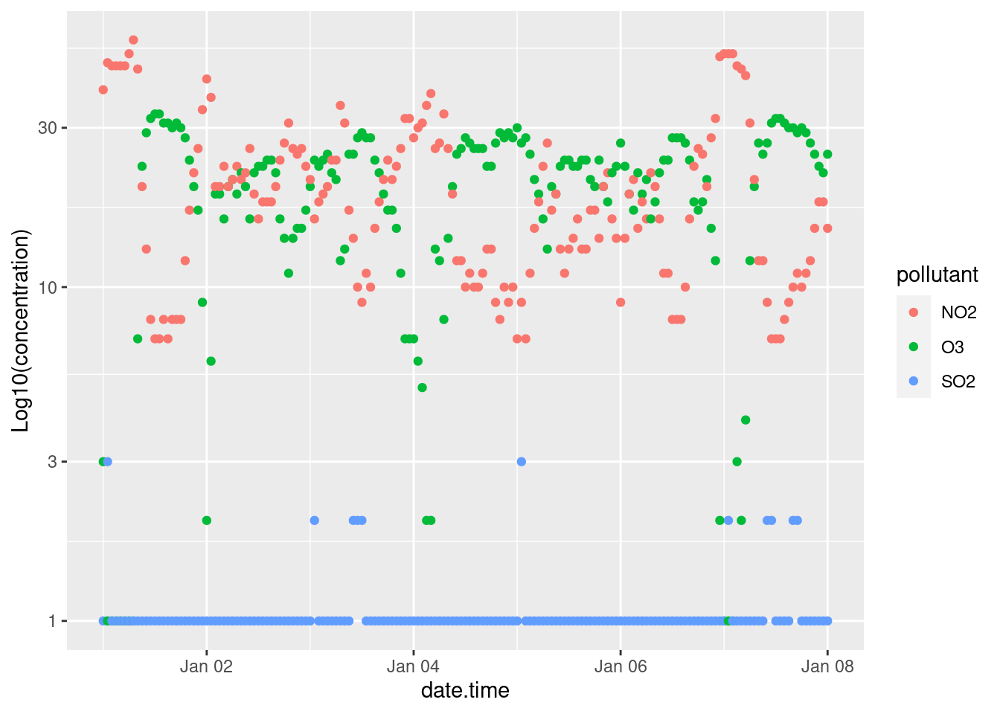
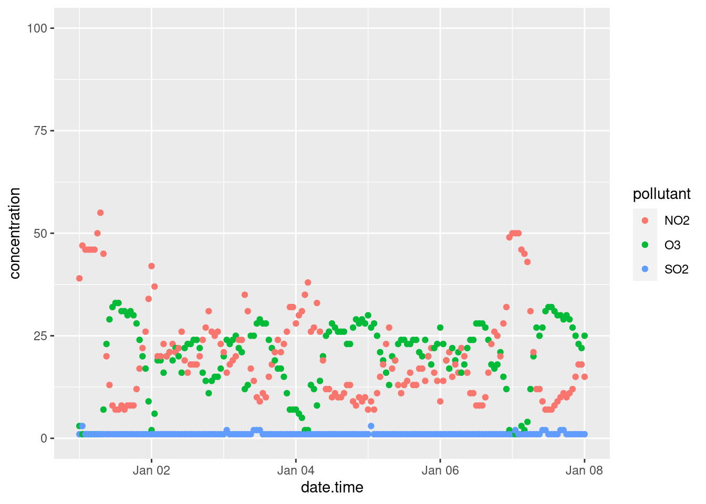
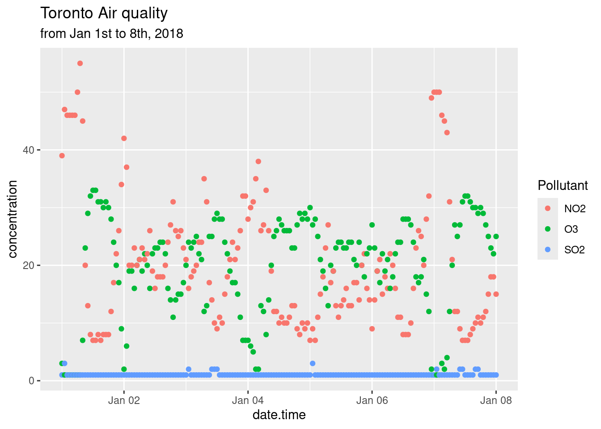
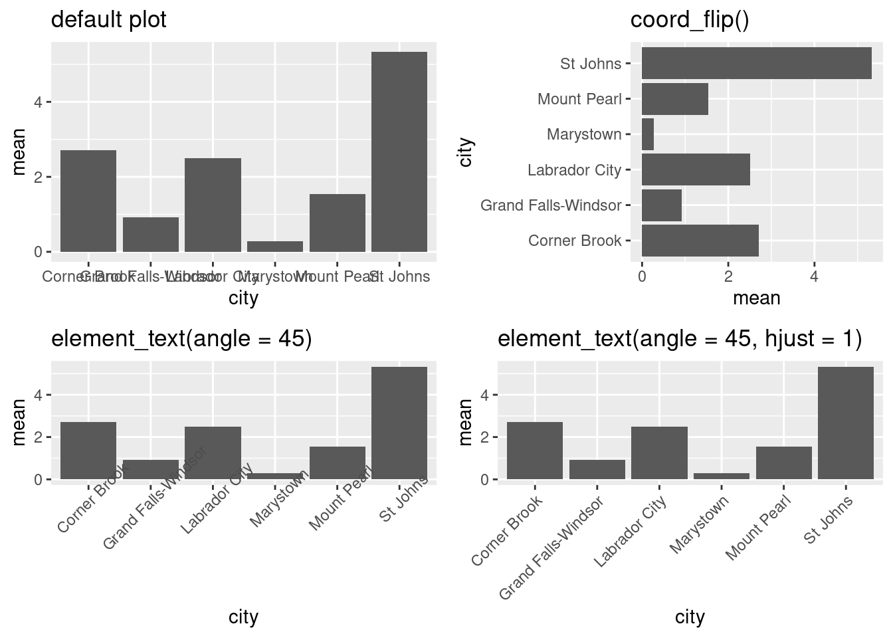
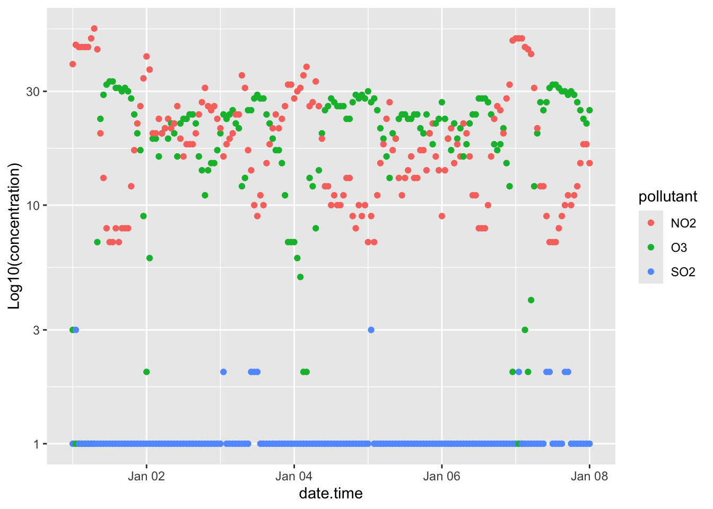
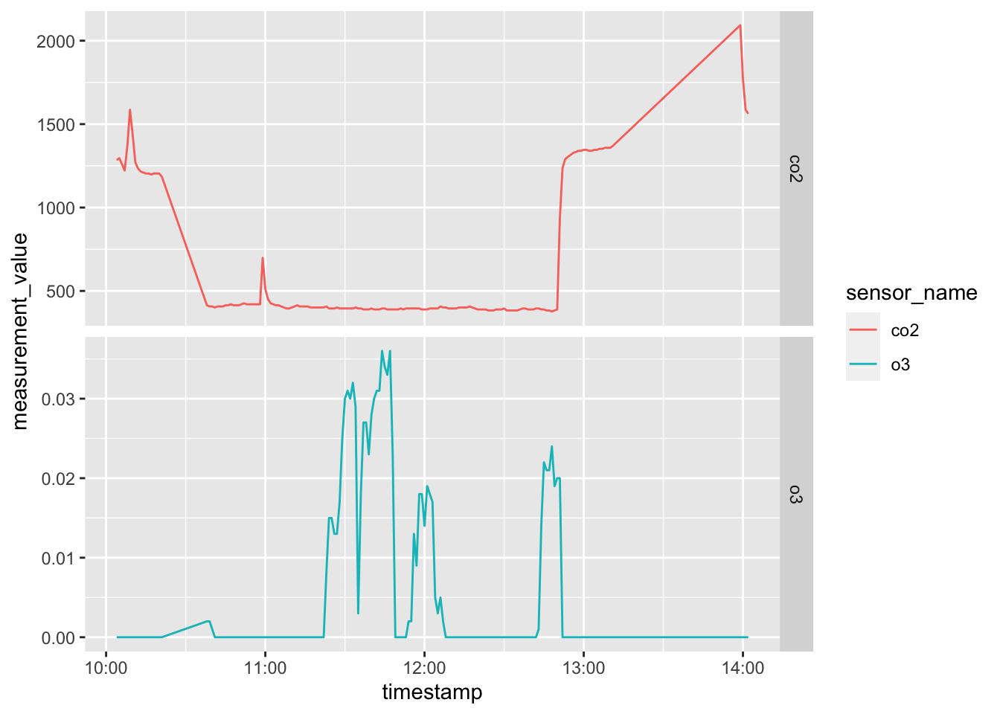
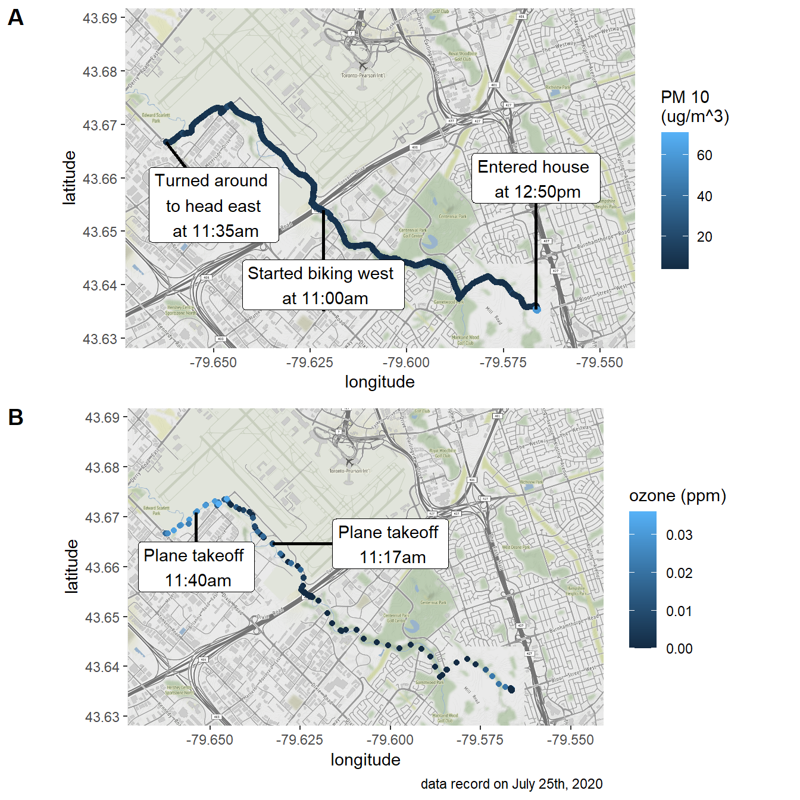

Chapter 18 Customizing your plots
Up until now we haven’t paid much attention to the explicit aesthetics of plots beyond what we needed for our exploratory analysis. However, many journals, publications, instructors, etc. will want plots to adhere to certain aesthetic standards. There are scores of options to play with, so we recommend you consult the ggplot2 Cheat Sheet.
18.1 Interactive Plots
Ultimately your visualizations will be printed to a static PDF document, but in the interim having an interactive plot can be helpful for data exploration. The plotly package magically makes most ggplots interactive with a simple command. Here’s an example with our Toronto air quality data:
torPlot2 <- ggplot(data = torontoAir,
aes(x = date.time,
y = concentration,
colour = pollutant)) +
geom_line()
plotly::ggplotly(torPlot2)This is also super useful when surveying spectroscopy data, although the large number of points in those datasets can take a while to render into interactive plotly plots.
18.2 Plot Themes
Overall themes can be applied to ggplot. The simple and minimalist theme_classic() is satisfactory for most submissions, but you can peruse the available themes in ggplot here or you can explore many more themes in the ggthemes package.
# generating example plot to modify
p <- ggplot(data = torontoAir,
aes(x = date.time,
y = concentration,
colour = pollutant)) +
geom_point()
# default theme
default <- p + labs(subtitle = "Default geom_scatter")
# Classic theme
classic <- p +
theme_classic() +
labs(title = "theme_classic()")
# arranging into grid
gridExtra::grid.arrange(default, classic, ncol = 2)
18.3 Legends
You can specify the position of the legend under the theme() option as such:
## Warning: A numeric `legend.position` argument in `theme()` was deprecated in ggplot2
## 3.5.0.
## ℹ Please use the `legend.position.inside` argument of `theme()` instead.
## This warning is displayed once every 8 hours.
## Call `lifecycle::last_lifecycle_warnings()` to see where this warning was
## generated.
Other legend positions include: “none”, “left”, “right”, “bottom”, “top”, or a two-element numeric vector to specify the location such as c(0.95, 0.95) for inside the top-right corner. c(0.05, 0.05) would place it inside the bottom right corner, and so on. Also note that legend.position = "none" will remove the legend entirely.
18.4 Modifying labels
The labels generated for the plots are derived from the variable names passed along to the ggplot() function. Consequently, variable names that are easy to code become ugly labels on the plot. You can modify labels using the labs() function. Note in the example below that we changed the legend’s title by specifying what aes() option we used to create the legend; in the example below it’s colour.
p + labs(title = "Toronto Air quality",
subtitle = "from Jan 1st to 8th, 2018",
xlab = "Date",
ylab = "Concentration (ppb)",
colour = "Pollutant")
18.5 Modifying Axis
We’ve already talked about labelling axis titles in Modifying labels, and adding marginal plots in Scatter plots. So we’ll just briefly touch upon some simple axis modifications.
18.5.1 Transforming axis
Transformations are largely related to continuous data, and are done using scale_y_continuous() or scale_x_continuous() functions. For example to scale the y-axis of our plot we’d do the following:

Other useful transformations include “log2” for base-2 logs, “date” for dates, and “hms” for time. The latter two are useful if R hasn’t correctly interpreted your dataset. The data type for the data.time column of our dataset was correctly interpreted during our initial importation using read_csv(). Hooray for doing it right the first time.
18.5.2 Limits
The limits of plots created with ggplot() are automatically assigned, but you can override these using the lims() function. For example we can specify the limits of our example plot to show from 0 to 100 ppb:

18.5.3 Axis ticks/labels
Sometimes when you are plotting, the length of the axis labels is unreadable. This is often the case with categorical data, such as the names of cities like we’ve encountered earlier. We addressed this earlier in Bar charts by rotating the plot 90\(^\circ\) with the coord_flip() function. This is often the best solution as it’s how we read English. Another solution is to rotate the axis labels themselves:
basePlot <- ggplot(data = subset(sumAtl, p == "NL"),
aes(x = city,
y = mean)) +
geom_col()
default <- basePlot +
labs(title = "default plot")
flip <- basePlot +
coord_flip() +
labs(title = "coord_flip()")
rotated <- basePlot +
theme(axis.text.x = element_text(angle = 45)) +
labs(title = "element_text(angle = 45)")
rotatedHJust <- basePlot +
theme(axis.text.x = element_text(angle = 45, hjust = 1)) +
labs(title = "element_text(angle = 45, hjust = 1)")
gridExtra::grid.arrange(default, flip, rotated, rotatedHJust, ncol = 2, nrow = 2)
18.6 Arranging plots
We talked about how facets can be used to generate multiple plots from a dataset (small multiples), but sometimes you want to combine two or more different plots together. There are a couple of ways, but we’ve been using grid.arrange() from the gridExtra package (as demonstrated above). You can read up on gridExtra here. There is also the ggarrange function from the ggpubr package which, amongst other things, can easily create shared legends between plots.
colchart <- ggplot(data = sumAtl,
aes(x = fct_reorder(city, mean),
y = mean,
fill = p)) +
geom_bar(stat = "identity") +
geom_errorbar(aes(ymin = mean - sd,
ymax = mean + sd)) +
coord_flip()
boxplot <- ggplot(data = atlNO2,
aes( x = city,
y = conc,
fill = p)) +
geom_boxplot() +
coord_flip()
boxplot
ggpubr::ggarrange(colchart,
boxplot,
ncol = 2,
nrow = 1,
labels = c("A", "B"),
common.legend = TRUE,
legend = "bottom")
18.7 Anotating plots
Everyplot can do with a bit of annotation. These range from providing critical information for contextualizing and understanding your plot to pointing out something you think the reader might miss but should know. These are different than captions, which is accomplished in the rmarkdown chunk header (see R code chunk options for a refresher).
Let’s quickly plot a map of annual mean 1-hr [NO2] in our dataset so we can visualize them spatially.
# need lat and long value for map
# mapNO2 <- atlNO2 %>%
# group_by(latitude, longitude, p, city) %>%
# summarise(mean = mean(conc))
# install.packages("ggmap")
# library(ggmap)
#
# atlMap <- get_stamenmap(bbox = make_bbox(lon = mapNO2$longitude,
# lat = mapNO2$latitude,
# f = 0.1),
# zoom = 6,
# maptype = "terrain",
# crop = FALSE)
#
#
# atlMap <- ggmap(atlMap)
#
# atlMapNow we want to plot our annual mean 1-hr [NO2] onto the map. For this plot we specifically want to annotate each point with its corresponding city location. Doing this manually would take ages, so we’re going to use the ggrepel package. We simply need to specify which column (naps id) we’ll use for our labels:
# atlMap + geom_point(data = mapNO2,
# aes(x=longitude,
# y=latitude,
# colour = mean,
# size = mean),
# alpha = 0.8) +
# scale_alpha(guide = "none") + # removing legend for alpha
# scale_size(guide = "none") + # removing legend for size
# ggrepel::geom_label_repel(data = mapNO2,
# aes(x=longitude,
# y=latitude,
# label = city),
# box.padding = 0.5,
# max.overlaps = Inf)Again, not the prettiest map, but that’s up to you to fix in post. geom_text_repel() is an incredibly useful package for quickly annotating plots. If you need to label/annotate points check it out.
18.8 Exercise
There is a set of exercises available for this chapter!
Not sure how to access and work on the exercise Rmd files?
Refer to Chapter 3.3 for step-by-step instructions on accessing the exercises and working within the UofT JupyterHub’s RStudio environment.
Alternatively, if you’d like to simply access the individual files, you can download them directly from this repository.
Always remember to save your progress regularly and consult the textbook’s guidelines for submitting your completed exercises.